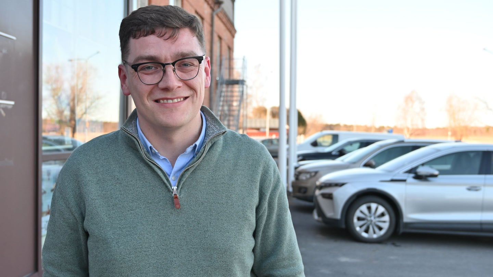
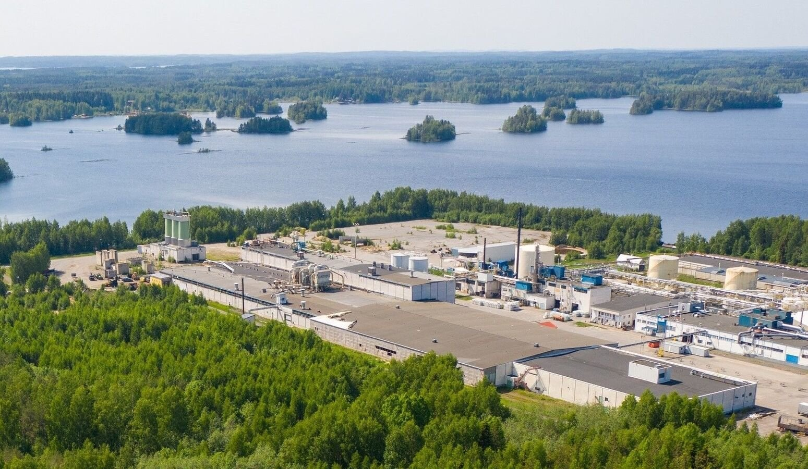

Scale42 CEO: 'I'd rather build in Kristinestad than Texas'
Vasabladet on Scale42's plan to develop a hyperscale data centre on the wind-rich Ostrobothnian coast.
Read the article →News & thought leadership
Joint-venture announcements, press coverage from Data Centre Dynamics, the Financial Times and Yle, and our own thought pieces on the dispersion of AI compute demand.

Vasabladet on Scale42's plan to develop a hyperscale data centre on the wind-rich Ostrobothnian coast.
Read the article →
Data Centre Dynamics on Scale42's 10-hectare Puhos site, with 10 MW available now scaling to 200 MW.
Read →
Coverage in Data Centre Dynamics on the Bakki joint venture and its initial capacity.
Read →
Joint venture creating an integrated energy and digital infrastructure platform across the Nordics.
Read →
GIG Ltd and Scale42 announce advanced discussions for a joint venture focused on integrated infrastructure.
Read →
Yle reports on Scale42's Finnish project; construction targeted for early 2026.
Read →
What algorithmic efficiency means for mid-scale data centre infrastructure.
Read →Module size is the most consequential design choice in modern data centre development. Here is why 12.5 MW lands in the sweet spot between grid integration, supply-chain availability, and customer onboarding speed.
Read →Long-duration hydropower behaves nothing like wind or solar at the substation. For 24/7 AI workloads, that distinction decides whether a site is investable or marginal.
Read →Glomfjord operations notes: when ambient cooling carries 30 kW racks straight through summer, where direct-liquid takes over, and the density threshold where the trade flips.
Read →Why we ship halls, not pour them — and what 12-week cycles look like in practice.
Read →Data residency, AI Act, and what hyperscaler vs Nordic-sovereign actually means.
Read →The thermal physics behind why GB200-class racks force a cooling architecture change.
Read →Why we publish dPUE and pPUE separately, and what 1.10 looks like at 12-month anniversary.
Read →A pragmatic look at the only heat-reuse pathway that pencils out at scale in the Nordics.
Read →A candid look at where we landed against plan, what we learned, and what 2027 looks like.
Read →